Ensure that all hardware, reagents, supplies and instructional materials are available.
Note:
Installers outside the U.S. must accommodate for the 220-V AC power requirements.
The large UPS requires 24 hours of charging before use. If charging has not been initiated, then locate the UPS, connect the battery according to the instructions, and plug it in. Do not connect anything to it or power it on at this time.
Before beginning , verify the peripherals cart is assembled and the peripherals are assembled on the cart.
Remove the Made-in-Chaska seals from the reagent pipettors.
Remove tape securing the orienter cover on top of the bulk feeder dispense chute.
Manually move each pipettor forward and backward. Confirm that the pipettor guide chains are not rubbing against each other or hitting into the other pipettors and that the strain-relief loops are not contacting the motors. Make any necessary adjustments.
Check the movement of the sample, incubator and wash pick-and-place assemblies for smooth motion and freedom from interference with cables routed above these assemblies.
Confirm that all vertical and horizontal pipettor belt clamps are secure.
Remove the tape securing the vessel orienter on top of the bulk feeder dispensing chute.
Install aspirate probe 1 in opening A1 on the dispense probe plate and finger-tighten the fitting. Aspirate probe 1 is inside a plastic bag that is taped to the substrate pump bracket. Installed correctly, the fitting is flush with the plate and the probe pulls up and springs back into position.
Caution: Ensure that aspirate and dispense probe tubing are not twisted together or able to catch on any wires or parts, especially the substrate insulation jacket.
Figure 279: Aspirate probe 1 shipping location
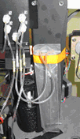
Figure 280: Aspirate probe 1 installed
Verify that the substrate probe and all aspirate and dispense probe fittings are finger-tight.
Prepare the pipettor gantries.
Move each pipettor forward and rearward (Y direction). Confirm that the pipettor guide chains are tracking straight (not rubbing each other or hitting the other pipettors). Make any necessary adjustments.
Confirm that all vertical and horizontal pipettor belt clamps are secure.
Prepare the reagent storage module.
Loosen the SPU locking screw (directly under the bulk vessel feeder). Remove the hex bolt from the top center of the SPU. Release the locking pin from the lower panel and swing the SPU open.
Remove the foam located between the SPU Presentation Tray motor belt and the shaft.
Remove the SPU lower panel.
Remove the reagent storage module cover.
Remove the tie-wrap and protective foam from the reagent pack gripper.
Note: Inspect all reagent storage rods or shafts and lubricate them if necessary.
Move the gripper to the home position located at the lower left corner.
Note: Leave the reagent storage module open to view the operation of the reagent pack gripper.
Prepare the fluidics module.
Remove each of the precision and wash valve caps, crack the rotor loose from the stator, and then reassemble the valve caps.
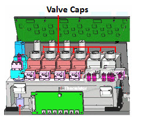
Engage the aspirate peristaltic pump tubing.
Perform these steps to install the cassettes.
Locate the cassettes (most commonly found in the bulk feeder).
Ensure the tubing is positioned in the cassette with the retainer clips in the cassette teeth
Hold the cassette between the thumb and forefinger.
Verify the black tab on the cassette is on the left and the spring is on the right, when facing the installed pump.
Insert the right side of the cassette into the pump, until it is seated fully in the pump.
Rotate the left side of the cassette into the pump, until it clicks into position.
Press on the center of the cassette to ensure that it is seated fully in the pump.
Ensure the tubing below the vacuum dampeners is not kinked. Adjust the dampener position, as required.
Close the SPU, and replace the hex bolt on the top center of the SPU.
Remove each of the valve caps, clean the valve rotors and stators using buffer or deionized water, then reassemble them.
Complete the analytical unit (AU) setup.
Inspect the instrument and tighten any loose screws, fittings, tubing, or electrical connections.
Check the motion paths of all assemblies and verify there are no cables or tubing that could interfere with movement. Closely check the sample and incubator pick-and-place, because many cables are routed above these assemblies.
Remove the upper right and upper left card cage covers and verify all PCBs are seated fully.
Insert interlock switch bypass keys into the two upper cover interlocks.
Load the supplies into the instrument.
Note: Wash Buffer and Vessels are loaded before installing software because:
The wash buffer reservoir will fill after software is loaded
Loading vessels ensures proper initialization.
Note: Use only Wash Buffer II on integrated instruments.
Install two new wash buffer containers into the instrument.
For the new wash buffer drawer with pressure sensors.
Place two wash buffer containers into the drawer with the openings positioned closes to the front of the drawer.
Slide the shims onto the containers' necks.
Remove the caps and the inner seals from the two new wash buffer containers.
Insert the cap and draw tube assemblies into the wash buffer containers and tighten the caps.
Close the wash buffer supply drawer.
For the old wash buffer drawer with weight sensors.
Open the wash buffer supply drawer.
Remove the caps and inner seals from two new containers of wash buffer.
Unwrap the draw tube and cap assemblies, insert them into the buffer containers, and tighten the caps.
Place the wash buffer containers into the drawer.
Connect the supply tubes to the cap fittings.
Inspect the tubing that feeds the drawer and verify that it is not damaged or kinked.
Close the wash buffer supply drawer.
Load reaction vessels into the hopper of the bulk feeder.
The bulk feeder holds about one and one-half bags of reaction vessels. Two bags of vessels are shipped with the instrument.
Open the solid waste container door and install a waste bag in the container.
Note: Waste bags are found in the Customer Starter Kit, with the other consumables.
Connect the peripherals for an integrated instrument. Refer to the configurations and diagrams below.
Caution: Before connecting the power cord to power, connect all cables and power cords to the peripherals.
Note: When making connections, be sure to tighten all connectors securely that have hold-down screws. Attach cable-ties and route cables neatly.
Silver Front PC Configurations:
Note: Sliver Front PC comes loaded with Windows XP and compatible with software 5.2 and below only.
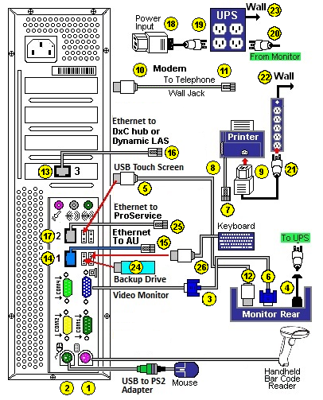
Connect keyboard, mouse, monitor, and USB backup drive to the PC.
Step
Action
Diagram Reference
1
Insert the single cable handheld bar-code reader into the keyboard connector on the PC.
1
2
Insert the cable from the mouse into the mouse connector on the PC (using a PS/2 adapter).
2
3
Connect the keyboard connector into a USB port on the PC.
26
4
Locate the monitor touch screen USB cable and connect it to the touch connector on the monitor.
12
5
Route the monitor touch screen USB cable to the PC and connect it to a USB port.
5
6
Locate the monitor power cable and plug it into the power connector on the rear of the monitor.
4
7
Locate the video signal cable and connect it to the video signal connector on the PC.
3
8
Route the video signal cable to the video monitor and insert the cable into the video signal input connector.
6
9
Locate the backup flash drive and connect it to one of the USB ports.
24
Connect the printer and modem.
The modem is optional. The preferred method to allow remote connection to the instrument is PROService (RMS).
Step
Action
Diagram Reference
1
Locate a network cable to the printer and connect it to the input connector on the printer.
8
2
Route the network cable to the DxC hub and connect it to an open port on the hub.
7
3
Locate the printer power cable and plug it into the power connector on the rear of the printer.
9
4
Connect the telephone cable for the modem (if applicable) to the wall jack or switch box. The internal modem requires an analog line, if used.
11
5
Connect the other end of the cable to the internal modem connector on the PC (if applicable).
10
Connect the network cables.
Step
Action
Diagram Reference
1
Connect one end of a network cable to the networking output port on the PC.
14
2
Connect the other end of this cable to the network port labeled "PC" on the rear of the DxI (near the power cord entrance).
15
3
Connect another network cable to port 3 of the Dual NIC card on the PC.
13
4
Connect the other end of this cable to the DxC network hub.
16
5
Connect another network cable to port 2 on the PC for PROService (if applicable).
17
6
Connect the other end of this cable to the PROService Rap box or hub (if applicable).
25
Connect the power cords.
Note: PC back up UPS is no longer included in the installation kit. Option: obtain an UPS from BCI (N/A OUS) or locally source one - must meet BCI UPS Power Ratings: Output Power Capacity => 1300VA or 780 Watts, Output Voltage= 120V, Input Voltage= 78 - 147 (120V Nominal).
Step
Action
Diagram Reference
1
Connect one end of the computer power cord to the PC.
18
2
Connect the other end of the computer power cord to the wall outlet or the power outlet strip.
Note:(Optional)
Connect the other end of the computer power cord to the UPS.
19
3
Connect the monitor power cord to the wall outlet or the power outlet strip.
Note:(Optional)
Connect the monitor power cord to the UPS.
20
4
Connect the printer power cord to the wall outlet or the power outlet strip.
Caution: If an UPS is required by owner, do not connect the printer power cable to the UPS.
Note: International installations require the power outlet strip be obtained locally. No outlet strip is shipped with the instrument.
21
5
Connect the power outlet strip to a 110-V AC wall outlet (220 V for international).
22
6
Ensure that the main instrument power switch is in the OFF position, then locate the instrument power cord and connect one end to the rear of the DxI using the two screws and clamp that are provided.
NA
7
Connect the other end of the instrument power cord directly to the large dedicated AU UPS.
NA
8
Connect the instrument power cord to the large dedicated AU UPS or to the wall power outlet if a large system UPS is not available.
Ensure that the battery on the UPS is connected. Refer to the instructions provided by the UPS manufacturer.
The UPS battery must charge a minimum of eight hours before use.
23
Mini PC Configurations:
Note: Mini PC comes loaded with Windows 8 and compatible with software 5.3.1 and above only. Refer to
Mod 11825 - DxI Version 5.3.1 - Install document in AirWatch for more information.
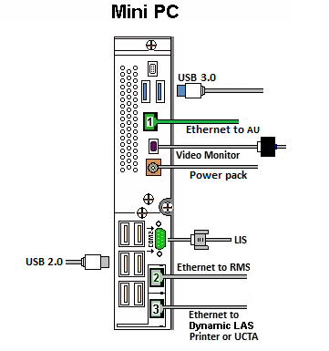
External CD drive connected to a USB 3.0 connections ( 2 blue USB ports).
Connect following to USB 2.0 connections ( 6 USB ports available-not blue. Use available USB 3.0 port if more than 6 ports are needed):
Monitor Touch Cable
Printer
Mouse
Keyboard
USB Backup Drive
Barcode reader (Do NOT use cable with circular PS2 connector that comes
with Barcode Reader. Use Ethernet to USB cable).
Connect LIS Serial Port Cable to the COM2 connection.
Connect network cable from instrument (AU) to Ethernet connection 1.
Connect the network cable from the RMS RAP box to ethernet connection 2 (DxI only).
Connect the network cable from the Dynamic LAS, or UCTA, to ethernetconnection 3 (DxI only).
Connect external power pack to PC power connector.
Connect video cable to mini port connection.
Connect the PC and the video monitor power cords to the wall outlet.
Note: If an UPS is required by owner, connect the PC and video monitor power cords to the UPS backup power connectors (not the surge-protected-only connectors).
Tighten all the connector hold-down screws, attach the cable-ties, and neatly route the cables.
Connect the cable from network connection 1 on the PC to the network connection labeled PC on the back of the DxI AU.
Power on the DxI system for installation setup.
Note: Before beginning the steps in this section, confirm that:
Main instrument power switch is in the Off position.
Upper and lower power distribution PCB switches are in their OFF positions.
Instrument main front covers are open and interlock bypasses are inserted into the two main cover interlock switches.
Rear and reagent storage covers is removed.
Reagent storage gripper is moved to the home position (far lower left).
SPU and reagent storage interlock switches are taped.
Power on the main instrument power switch.
Power on the upper and lower power distribution PCB switches.
Ensure that the power switch on the outlet strip is in the ON position.
Power on the printer.
Power on the monitor.
Power on the PC by pressing the PC on/off power switch.
Note: When rebooting the Privacy & Security compliant Windows 8 or Windows 10 PC, you must enter security password "Access2Admin" when prompted to launch Windows.
Open a desktop sharing connection from the PC to the AU.
For Windows XP
From the Windows desktop, select
Start
> Programs > Accessories > Communication > Remote Desktop Connection.
Enter the IP address
192.168.2.2 at the prompt, and then select
Connect. When prompted, enter the username
user and the password
tech.
Note: If a pop-up message asks you to change the shortcut to AUOBJ.exe, select
No.
For Windows 8
Press the
Windows key, select the
Remote Desktop icon or type
remote and open the Remote Desktop Connection program.
Type in
192.168.2.4 into the Computer field and select
Connect.
Enter
user for User Name and
tech for the password if prompted.
If prompted at the RDS warning screen, check the box for "Don't ask me again for connections to this computer" and select
Yes.
Note: For Windows 8e, the default console IP address is 192.168.2.3 and the AU IP address is 192.168.2.4. Neither IP address changes during the software load process.
Disconnect the DxI PC network cable from the DxC hub while loading software on both the DxI and DxC.
Note: Disconnecting the cable prevents a possible software lockup on either system caused by a communication issue when the DxC software is upgraded.
Insert the software CD into the CD-ROM drive.
Note: The software installation program should start automatically. It may take up to 3 minutes for the program to launch. If the program doesn’t auto launch, it can be manually started by selecting the Computer icon on the desktop and then double clicking on the D: DVD drive.
Proceed through the installation dialog selecting Next and Yes as needed. Select the finish button when complete to restart the console PC.
Note: When rebooting the Privacy & Security compliant Windows 8 or Windows 10 PC, you must enter security password "Access2Admin" when prompted to launch Windows.
If an
Unknown Processes Running message occurs after the PC restarts,
then select
OK to continue.
Insert the combined APF/AAF CD into the DxI drive when prompted, then select
OK to install the APF/AAF.
If installing APF or APF/AAF
setup.exe file (downloaded from beckmancoulter.com) from USB drive or CD:
Navigate to the USB drive or CD drive. Double-click on the file setup.exe.
Select
Setup to transfer the APF files to your system.
From the following window, press
[Enter] to return to the Explorer window.
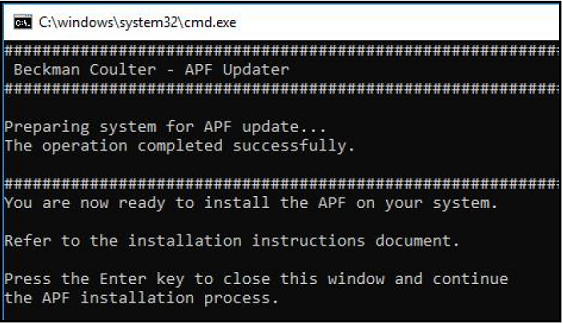
Close the Explorer window by selecting the
X in the upper right corner.
Relaunch the user interface and select
OK to install the APF.
If installing APF or APF/AAF from USB drive (downloaded from the Access Applications Service Manual):
For Windows 8, press
Windows key, type
regedit and select
regedit.exe to open Registry Editor. For Windows XP, press the
Windows key, type
regedit and select
OK to open Registry Editor.
In the Nexstep folder, right click on
APFLoadPath, select
Modify, change the value from D: to E: or F:.
Relaunch the user interface and select
OK to install the APF.
Restore the
APFLoadPath value from E: or F: to D:, using the Registry Editor.
If installing APF or APF/AAF from CD (downloaded from Access Applications Service Manual), relaunch the user interface and select
OK to install APF.
Note:
The User Interface will launch after the APF is loaded.
The User Interface will not initialize to Ready until after the supplies are loaded. A "Substrate Selector Valve out of position" error is normal until substrate is loaded.
Note: The AAF loads on the DxI PC during the APF update. If the DxC is connected to the DxI, a
DxI tests are not runnable message is displayed on the DxC PC. The AAF must be updated on the DxC to run tests.
Reconnect the DxI PC network cable to the DxC hub if previously removed and update the AAF on the DxC PC.
Select
System Setup > Chem Update.
Select the
AAF option, and then select
OK.
Place all installation CDs in the customer software binder.
Prepare the instrument for docking to the UCTA.
Attach the knock-out template to the right side panel of the instrument.
The knock-out template is included in the upgrade kit.
Carefully punch the side panel inward with a small hammer.
Straighten and smooth the edges of the hole with a file or utility knife, then remove all the material from the hole.
Push on the sheet metal knockout tab, until it breaks away. Remove and discard the tab and template.
For instructions on connecting the DxI to the UCTA, refer to the Installations, Complete Integrated Platforms System Installation Procedure in the UniCel Integrated Platforms Service Manual.
Replace the rear cover supports.
Note: The redesigned cover supports attach the UCTA transfer shuttle to the DxI instrument.
If the upper and center rear covers of the instrument are installed, remove them.
Note: The upper rear cover will be modified and reinstalled later in this procedure, but the center rear cover will not be reused.
Remove the rear cover supports from the chassis (two screws and washers each).
Attach the replacement cover supports to the chassis using two 1/4-20 x 5/8-in screws and washers each.
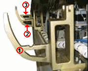
1
Right
2
Center
3
Left
Note:
The center and right rear cover supports are identical.
Each cover support has two locating pins to obtain the correct position.
Verify or configure these settings in the user interface:
Auto Delete Setup
Scheduled Backup
Enable Utility Assay
Date and Time
Language (if applicable)
Note:Windows 8 may require adjusting the screen resolution to make the user interface appear as a full screen. Perform the following steps to adjust the resolution.
Press the
Windows key, type
Display and select
Settings option.
Open the
Change display settings icon.
Change the resolution to 1024 x 768, select
Apply, and
OK.
Note: If the user interface is abnormal (has missing or misaligned display icons), then perform the following steps to return the user interface back to normal.
Press the Windows key, type
Display and select
Settings option.
Open the
Display icon.
Select
Smaller - 100% (default) and click
Apply.
Note: If the monitor has blank display areas at the top and bottom of the user interface screen, then perform the following steps to eliminate the areas.
Press the
Windows key, type
graphics and open the
Intel HD Graphics Control Panel program.
Select
Display and then check the
Scale Full Screen option.
Click
Apply and OK.
Note: Additional display settings are available in the Intel Graphics program which may resolve display features on Command Central KVM connections.
Open a desktop sharing connection from the PC to the AU. Refer to step 16 for more information.
If a pop-up window is displayed on the AU with a
the ftdibussys on FTDI USB Drivers Disk is needed message, then:
Verify the USB cable is connected to the correct port on the CPU PCB.
Verify the USB cable is connected to JR1 of the USB encoder interface PCB on the dual-gantry sample pipettor.
Verify the USB controller is enabled in CMOS.
Reload the system software on the AU only or reload the USB driver on the AU. From the AU,
For Windows XP
Select
My Computer > AU_PC (C:)
> Windows > System 32
> DRVStore, and then double-click DPInst.exe. Relaunch the AUObj when complete.
For Windows 8
Select
Computer > Local Disk (C:) or AU_PC (C:)
> Windows > System 32
> DRVStore, and then double-click DPInst.exe. Relaunch the AUObj when complete.
Note: The error indicates that the USB hardware was not found when the drivers were loaded during the software install.
Change the folder options on the AU.
For Windows XP:
Select
Start > All Programs > Windows Explorer.
Navigate to
Tools > Folder Options, and then select the
View tab.
Verify that:
Hide extensions for know file types is checked.
Display the contents of the system folder is checked.
Show hidden files and folders is checked.
Hide protected operating system files is unchecked.
Select
Apply to All Folders > OK.
For Windows 8:
Press
Windows key and select File Explorer.
Navigate to
View > Options, and then select the
Change folder and search options tab.
On
Folder Options box, clik on
View.
Verify that:
Hide extensions for know file types is checked.
Display file icon on thumbnails is checked.
Display the file size information in folder tips is checked.
Show hidden files, folders, and drives is checked.
Hide protected operating system files (Recommended) is unchecked.
Note: Keep the rest of the options as they are.
Select
Apply to All Folders > OK.
Close the desktop sharing connection.
For Windows XP:
From the
AU Desktop, select
Start > Disconnect or select the
X in the upper right corner.
Select
OK at the
Disconnect Windows Session pop-up.
For Windows 8:
From the
AU Desktop, right click on
Remote Desktop Connection icon on the upper left corner or on the task bar > Close or select the
X in the upper right corner.
Select
OK at the
Your remote session will be disconnected pop-up.
Update the registry settings.
For Windows XP:
Press the
[Windows] key at the bottom left corner of the keyboard, and then select
Run. Enter
regedit to open the Registry Editor.
Select
DxIToDxCServerIp, and then select the
Modify option.
Enter
134.217.96.184, and then select
OK.
If using the CTS (closed-tube sampling) feature enabling DxC networking on multiple DxCs on this system, then set the IP address as shown.
DxI 1 IP 134.217.96.184
DxI 2 IP 134.217.96.185
DxI 3 IP 134.217.96.186
DxI 4 IP 134.217.96.187
Note: The CTS feature monitors up to four networked DxC instruments and allows a sample tube to be loaded on multiple DxCs while only being pierced once.
Verify that
DxIToDxCDefaultLocalIp is set to
DefaultLocalIp.
Close the Registry Editor.
For Windows 8:
Press the
[Windows] key, type
regedit and open the regedit.exe program.
Right click on
DxIToDxCServerIP and select
Modify.
Enter
134.217.96.184 and select
OK. If using the CTS (closed tube sampling) feature enabling DxC networking then set the IP address as shown.
DxI 1 IP 134.217.96.184
DxI 2 IP 134.217.96.185
DxI 3 IP 134.217.96.186
DxI 4 IP 134.217.96.187
Note: The CTS feature monitors up to four networked DxC instruments and allows a sample tube to be loaded on multiple DxCs while only being pierced once.
Verify that
DxIToDxCDefaultLocalIp is set to
DefaultLocalIp.
Unplug the network cable for the DxI AU at the DxC hub.
Select the Local Area Connection that has Network Cable Unplugged in the status column, select
Properties, select the
Internet Protocol (TCP/IP) option, and then select
Properties.
Verify these settings for the local area connection. Change as needed.
Select
Use the following IP address
IP address is 134.217.96.188
Subnet Mask is 255.255.255.0
If using the CTS feature on this system, then set the IP address as shown.
DxI 1 IP 134.217.96.188
DxI 2 IP 134.217.96.189
DxI 3 IP 134.217.96.190
DxI 4 IP 134.217.96.191
Note: The IP address entered in this step is the DxI AU address in the DxC network. If the settings are changed, restart the AU for the changes to take effect.
Plug the network cable into the DxC hub, close the
Network Connection window and the remote desktop connection to the AU.
On the PC, select
Start > Settings
> Control Panel > Network Connections.
There are usually three available connections.
Select
Local Area Connection 3, select
Properties, select the
Internet Protocol (TCP/IP) option, and then select
Properties.
Verify these settings for the Local Area Connection 3. Change as needed.
Select
Use the following IP address
IP address is 134.217.96.184
Subnet Mask is 255.255.255.0
If using the CTS feature on this system, then set the IP address as shown.
DxI 1 IP 134.217.96.184
DxI 2 IP 134.217.96.185
DxI 3 IP 134.217.96.186
DxI 4 IP 134.217.96.187
Note: The IP address entered in this step is the DxI PC address in the DxC network. If the settings are changed, then restart the PC for the changes to take effect.
Close the
Network Connections window.
For Windows 8:
Open a remote desktop connection to the AU.
Press the Windows key, type
remote, and open the Remote Desktop Connection program.
Type
192.168.2.4 into the Computer field and select
Connect.
Enter
user for the User Name and
tech for the password if prompted.
If prompted at the RDS warning screen, check the box for "Don't ask me again for connections to this computer" and select
Yes.
Note: For
Windows 8, the default console IP address is 192.168.2.3 and the AU IP address is 192.168.2.4. Neither IP address changes during the software load process.
Unplug the network cable for the DxI AU at the DxC hub.
Press the Windows key, type
network connections, click on
Settings, and select
View Network Connections.
Right click on
Local Area Connection 2, choose
Properties, select
Internet Protocol Version 4 (TCP/IPv4) and choose
Properties.
Verify these settings for the local area connection. Change as needed.
Select
Use the following IP address
IP address is 134.217.96.188
Subnet Mask is 255.255.255.0
If using the CTS feature on this system, then set the IP address as shown.
DxI 1 IP 134.217.96.188
DxI 2 IP 134.217.96.189
DxI 3 IP 134.217.96.190
DxI 4 IP 134.217.96.191
Note: The IP address entered in this step is the DxI AU address in the DxC network. If the settings are changed, restart the AU for the changes to take effect.
Plug the network cable into the DxC hub, close the
Network Connection window and the remote desktop connection to the AU.
Press the Windows key, type
network connections, click on
Settings, and select
View Network Connections.
Right click on
Local Area Connection 3, choose
Properties, select
Internet Protocol Version 4 (TCP/IPv4) and choose
Properties.
Verify these settings for the Local Area Connection 3. Change as needed.
Select
Use the following IP address
IP address is 134.217.96.184
Subnet Mask is 255.255.255.0
If using the CTS feature on this system, then set the IP address as shown.
DxI 1 IP 134.217.96.184
DxI 2 IP 134.217.96.185
DxI 3 IP 134.217.96.186
DxI 4 IP 134.217.96.187
Note: The IP address entered in this step is the DxI PC address in the DxC network. If the settings are changed, then restart the PC for the changes to take effect.
Close the
Network Connections window.
Verify the IP and ethernet addresses on the DxC console.
Note: Check the IP and ethernet addresses on the DxC console to prevent a network connection problem. Check the addresses after the system software has been loaded on the DxC console.
Press the
System Setup icon on the DxC console, and then select
System Configuration.
Type
beckman for the password, and press
Enter.
Select the
Immuno tab, and verify these settings. Change as needed.
If not using the CTS feature, then use the settings for DxC number 1.
DxC Number
UCTA IP Address
UCTA Ethernet Number
Console IP Address
AU IP Address
1
134.217.96.180
The 12 character ethernet number is located on a label on the front of the UCTA card cage cover
134.217.96.184
134.217.96.188
2
134.217.96.181
134.217.96.185
134.217.96.189
3
134.217.96.182
134.217.96.186
134.217.96.190
4
134.217.96.183
134.217.96.187
134.217.96.191
Select the
DxC tab, and verify that
Instrument 1 is checked and that the Console IP Address is 134.217.96.176.
If using the CTS feature on this system, then set the IP address as shown:
Instrument 1 is checked and IP Address is 134.217.96.176
Instrument 2 is checked and IP Address is 134.217.96.177
Instrument 3 is checked and IP Address is 134.217.96.178
Instrument 4 is checked and IP Address is 134.217.96.179
Note: If any IP addresses are changed, then the DxC must be rebooted for the changes to take effect.
Configure the instrument from the user interface.
Select
Configure > PC Admin > System Admin > Integrated System Setup, and then enter the password
Access2Support.
Select the correct instrument configuration, and then select
OK.
Note: Attach the UCTA transfer shuttle to the DxI before installing the rear covers. Refer to the "Installation, Complete Integrated Platforms System Installation Procedure" in the UniCel Integrated Platforms Service Manual for details on attaching the UCTA transfer shuttle to the DxI.
Attach the rear shuttle panel to the rear cover supports using three 8-32 x 1/4-inch screws (one on each support).
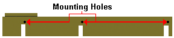
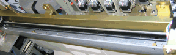
Attach the end cap to the lower cover of the transfer shuttle using two 10-32 x 1/2- inch screws.
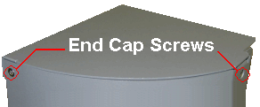
Attach the lower cover of the transfer shuttle to the center and right rear cover supports using two 10-32 x 3/4-inch screws.
Do not tighten the screws, they will be tightened after attaching the top cover to the transfer shuttle.
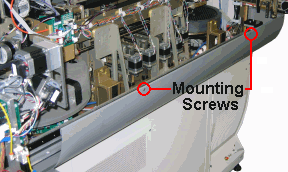
(Optional)Attach a 1/4-20 x 3/8-inch screw to the top of each cover support.
The screws secure the upper rear cover to the cover supports.
Remove the panel from the upper rear cover and attach the cover to the instrument.
Remove the three brackets from the housing for the dual-gantry pipettor, and attach the brackets to the upper rear cover using six 8-32 x 7/8-inch screws.
The screws are located in a bag taped to the inside the housing.
Attach the housing to the upper rear cover.
Attach the top cover of the transfer shuttle, and tighten the screws.
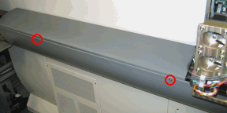
If the UCTA has been connected to the DxI, close the cover on the UCTA pick-and-place.
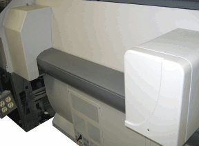
Start up the instrument.
Load two bottles of substrate.
Initialize the instrument.
Install the external drain.
Note: The DxC instrument requires an external drain. Route the DxI and DxC tubing to the drain together.
Inspect all tubing and verify that it is routed correctly.
From the
Main Menu, select
Diagnostics > Prime Fluidics > Select All. Change the number of cycles for all devices to 16 and start priming.
Note: The system automatically performs a substrate drawback calibration during the priming process.
Inspect for leaks in these locations.
Fluidics reservoir
Fluidics drawer
All reagent and sample pump circuits
Substrate pump load circuit
Duck-bill valve area
Behind lower right rear cover
Verify that the secondary pressure regulator is adjusted to 20 psi.
Check the reagent storage module functions.
Load a reagent pack. Observe the loading process and confirm that the gripper moves the pack without bumping or dropping it.
Check the operation of the three fans inside the reagent storage module. Replace any fans that are not operating.
Complete the nest verification by selecting
Diagnostics > Subsystem Diagnostics
> Reagent Storage > Start.
Observe the placement of the reagent pack in the storage nests or slots. If the placement of the pack is incorrect, realign the reagent storage module.
Note: Refer to the
RS: Aligning Reagent Gripper X- and Z-Axis procedure. Under normal operation, the gripper should place the pack at the same level as the nest or slot, without pushing down on the nest or slot, and might release the pack a step above the nest or slot.
Remove the reagent pack.
Replace the reagent storage module cover.
Initialize the system with
Remap selected.
Verify the vessel handling reliability.
Note:
If a vessel exerciser is canceled before completion, then initialize the system with
Clean-out of All Positions option selected to remove any remaining vessels from the system.
It is not necessary to routinely evaluate alignments during installation. Check or perform alignments only to correct problems that arise while running the instrument. Report any need to realign to Chaska via the CFF process.
Select
Diagnostics > Device Diagnostics > Exerciser and run these reaction vessel exercisers.
Vessel Exerciser
Reps
Approximate Run Time
Dilution Route
100
5 minutes
Sample Route
100
10 minutes
Reaction Route 1
50
8 minutes
Reaction Route 2
50
8 minutes
Note:
Run the UCTA exerciser from the
DxC screen.
Press the
Utilities icon, select
Diagnostics, and select
UCTA Diagnostics as the Sub-Functional Area option.
Select
Exerciser, and check the box for the
Cycle Sample Vessels option.
Change the cycle count to 25, and select
Start.
Verify that the vessels are transferred back and forth between the DxI and UCTA without errors.
If any exerciser fails, make the required adjustments or alignments, and then repeat the exercise.
Calibrate pressure monitoring.
Calibrate the reagent pipettor and wash tower pressure sensors. Select
Diagnostics > Device Diagnostics > Analog Devices > Sensor Calibration > Pressure > Determine All Curves.
Note: (Before proceeding) For
DXI 800 systems: Program and run system check, carryover, and low volume matching
at the same time, prior to loading the sample racks. Low volume matching cannot be programmed while the instrument is running, therefore ensuring all samples are programmed prior to loading will reduce the amount of time required for verification runs to complete. For
DXI 600 systems: Program and run system check and carryover at the same time. These tests will need to finish and system in ready before running DXI low volume test.
Note: The DxI Carryover test must pass before running UCTA Carryover.
Select
Sample Manager > New Request > Maintenance.
Select the
UCTA Carryover option, and then select
OK.
Follow the on-screen instructions to fill the racks.
Load the racks on the UCTA, and then select
Run.
When the test is complete, select
Maintenance Review > Carryover
> UCTA Carryover to review and print the results.
If the substrate bottle has not switched, then select
Supplies > Bulk Supplies > Change in-use bottle > Substrate and complete a substrate prime (n = 16) to flush the second bottle circuit.
(Optional) Calibrate an assay that the customer plans to run.
(Optional) For customers planning to run dilution assays, perform the dTest/dAP and set the dilution factor for each pipettor.
Remove all interlock devices, close or replace all covers, and remove the protective wrap on the SPU covers.
If the local language is not English, then remove the English caution label on the reagent pack and apply the appropriate language label to the cover of the reagent load tray.
Test the bar code labels for the account and the LIS interface.
Test the console modem or PROService functionality (if applicable) and document the modem number, along with the switch box port (if used), in the installation service order.
Note: If desired, contact Technical Support to have them confirm the RMS connection.
Train the customer how to replace the duck-bill valve and emphasize the importance of performing this maintenance procedure regularly.
Print the alignment report and a final copy of
"specific.ini" file and place it in the customer software binder with the system software CD.
Create an immediate backup.
Sign and date all reports. Leave the originals with the instrument.
Review the completed checklist in the install record document with the customer and have the customer sign the document. Place a copy in the installation documentation section of the
Installation Implementation Guide.
Complete a service request or document the service activity in the appropriate system. Place a hard copy of the report or service record in the service section of the maintenance and service log.
Report any major hardware problems found during the installation to your local support organization.


 Note: There is a visible tag attached to the transfer pump tubing. This tag notes further action is required for the waste drainage system. Refer to Fluidics: Installing External Drain Kit and DxI Fluidics: Installing Liquid Waste Drawer procedures.
Note: There is a visible tag attached to the transfer pump tubing. This tag notes further action is required for the waste drainage system. Refer to Fluidics: Installing External Drain Kit and DxI Fluidics: Installing Liquid Waste Drawer procedures.